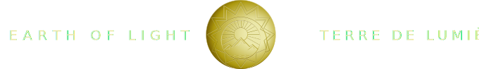

<!-- header -->
<div class="container-fluid fixed-top custom-header">
  <div class="row justify-content-between align-items-center">
    <div class="col-lg-3 col-6">
      <i
        class="bi bi-list ps-3 headerIcon"
        [ngClass]="menuOpened ? 'invisible' : 'visible'"
        (click)="openSideMenu(content)"
      ></i>
    </div>
    <div class="col-lg-6 text-center d-none d-lg-block">
      
    </div>
    <div class="col-lg-3 d-none d-lg-flex justify-content-end">
      <div class="d-flex flex-column align-items-center pe-3">
        <i
          class="bi bi-box-arrow-up headerIcon"
          (click)="shareCurrentPageLink()"
        ></i>
        <p class="text-white">Share this page</p>
      </div>
    </div>
    <div class="col-6 d-block d-lg-none">
      
    </div>
  </div>
</div>

<!-- sideMenu -->
<ng-template #content let-offcanvas>
  <div class="offcanvas-body">
    <i
      class="bi bi-x headerIcon"
      (click)="menuOpened = false; offcanvas.dismiss('Cross click')"
    ></i>
    <div class="container">
      <div
        *ngIf="screenWidth > 768; else elseBlock"
        class="row gy-2 flex-column text-center"
      >
        <div *ngFor="let item of sideMenuItems" class="col-12">
          <a [routerLink]="item.href">
            <ng-container
              *ngIf="!item.isActive; then nonActiveImage; else activeImage"
            >
            </ng-container>
            <ng-template #nonActiveImage>
              
            </ng-template>
            <ng-template #activeImage>
              
            </ng-template>
          </a>
        </div>
      </div>
      <ng-template #elseBlock>
        <div class="row gy-3 flex-column text-center">
          <div *ngFor="let item of sideMenuItems" class="col-12">
            <a class="mobileIconsText" [routerLink]="item.href">{{
              item.name
            }}</a>
          </div>
        </div>
        <div class="row mt-4 text-center">
          <div *ngFor="let socialMedia of socials" class="col-2">
            <a [href]="socialMedia.link" target="_blank">
              
            </a>
          </div>
        </div>
      </ng-template>
    </div>
  </div>
</ng-template>